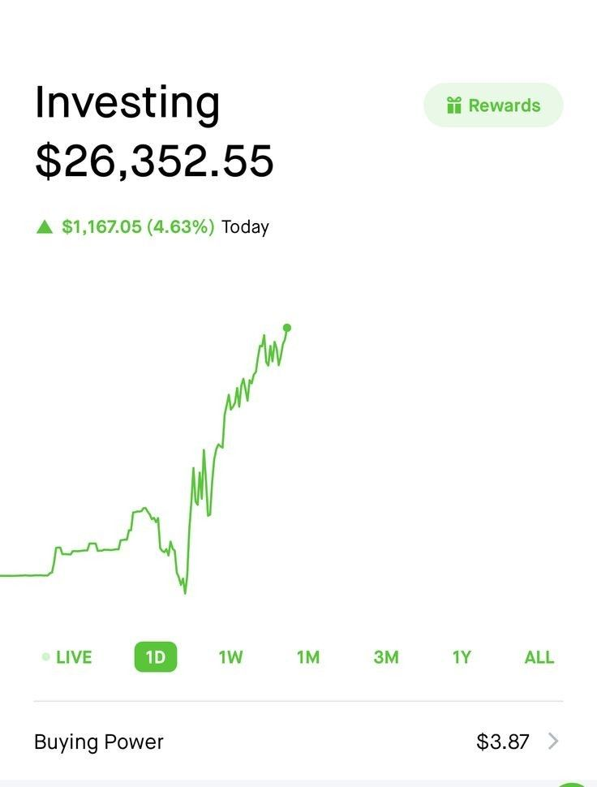

Palantir Technologies Inc PLTR
Data analytics, government and commercial software, AI platforms.
Start with the watchlist, then learn the account, ETF, and IRA basics behind the setup.

This is an educational watchlist, not a recommendation to buy or sell. Start with the ticker, then learn what the company or fund actually does.
Data analytics, government and commercial software, AI platforms.
GPUs, AI computing, semiconductors, and data centers.
E-commerce, AWS cloud, advertising, logistics, and consumer scale.
iPhone ecosystem, services, hardware, and brand loyalty.
Search, YouTube, advertising, cloud, and AI.
Semiconductor manufacturing behind many major technology supply chains.
Semiconductors, infrastructure software, networking, and AI-related demand.
Social platforms, advertising, AI, and metaverse investments.
Dividend-oriented ETF lane for income-focused investors.
Aerospace and defense sector ETF. Sector funds can be more concentrated.
Broad U.S. stock market exposure often used as a simple long-term ETF example.
International stock exposure outside the U.S. for broader diversification.
A Roth IRA is the account. ETFs are what you can put inside it. These two are simple examples to understand first.
Broad U.S. stock ETF for long-term growth potential.
Simple core U.S. market exposure.International stock ETF that adds non-U.S. diversification.
Global diversification outside the U.S.Understand the words before comparing platforms.
An account that lets you buy investments like stocks, ETFs, mutual funds, and bonds.
A small ownership piece of one company.
A basket of investments that trades like a stock.
The built-in yearly fee charged by a fund.
A payment some companies or funds send to shareholders.
How much an investment moves up and down.
Best all-around beginner-to-serious platform.
Strong for Roth IRA, brokerage, fractional shares, research, and long-term investing.Best long-term index fund culture.
Strong for low-cost funds, retirement, and passive investing.Best full-service brokerage and banking combo.
Strong education, ETFs, brokerage, checking, and long-term platform feel.Best simple app interface.
Easy to use, but guard against overtrading.Both are retirement accounts. The main difference is when the tax benefit happens.
Up to $7,500, or $8,600 if age 50 or older. Your real max is the lower of the IRS cap or your earned income.
Single filers phase out from $153k to $168k MAGI. Married filing jointly phases out from $242k to $252k.
Contributions can usually come out anytime. Earnings generally need the 5-year rule and age 59 1/2 for tax-free treatment.
An advanced strategy some higher-income earners use when they cannot contribute directly to a Roth IRA.
Put after-tax money into a traditional IRA, then convert it into a Roth IRA.
If you already have pre-tax traditional, SEP, or SIMPLE IRA money, the pro-rata rule can make part of the conversion taxable.
Track Form 8606, avoid guessing, and use a tax professional if the account history is messy.
Keep the mental model simple: account first, investments second, time horizon always.
Use the workplace plan first if there is an employer match. Traditional lowers taxes now; Roth uses after-tax money.
Use an IRA for more control over provider and investments. Roth is tax-free later; Traditional may help taxes now.
Use this for extra investing after retirement accounts or for flexible goals. It has no retirement tax shelter.
Stocks, ETFs, mutual funds, and bonds go inside the account. The account is the container; the investments do the work.